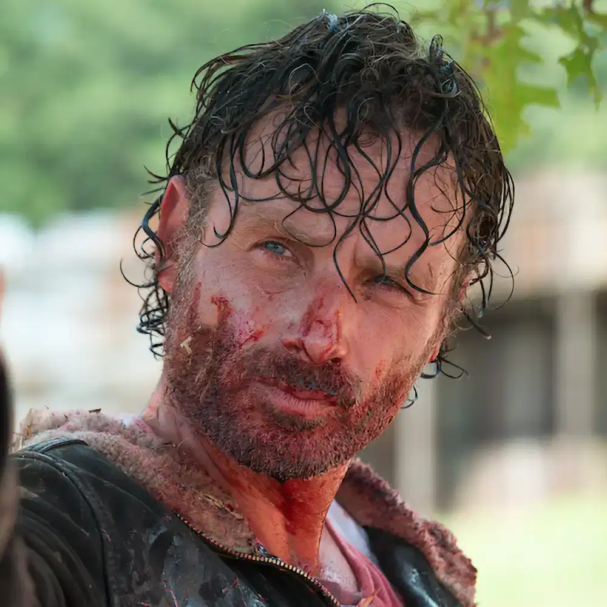
Rick Grimes, il est le personnage principal de la série The Walking Dead. Ancien shérif adjoint du comté de King, il devient le meneur naturel du groupe principal. Prêt à tout pour protéger les siens, il oscille entre idéalisme et brutalité face aux menaces humaines..
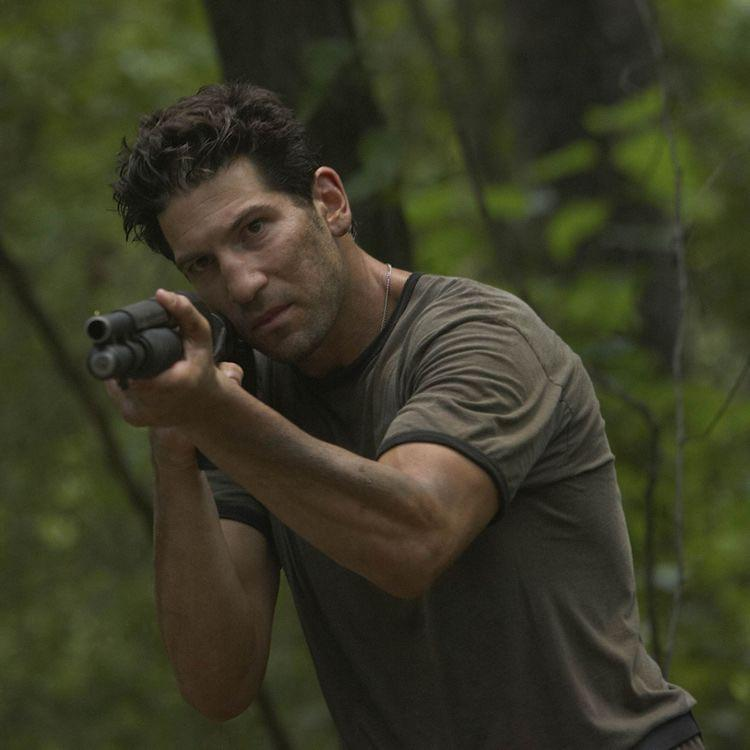
Shane Walsh, il est le meilleur ami et ancien collègue de Rick, il entretient une liaison avec Lori en pensant Rick mort. Sa jalousie et sa vision brutale de la survie le poussent à commettre des actes atroces.
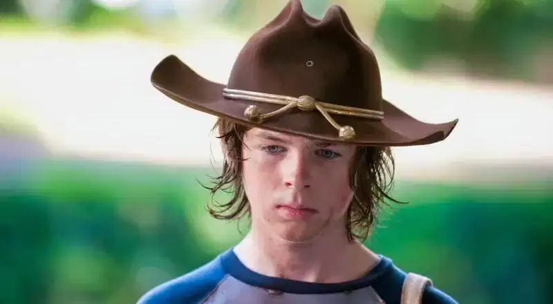
Carl Grimes, il est le fils de Rick et Lori, il grandit dans un monde violent qui le force à perdre son innocence très tôt. Il devient un jeune homme résilient, cherchant à préserver un idéal de paix.
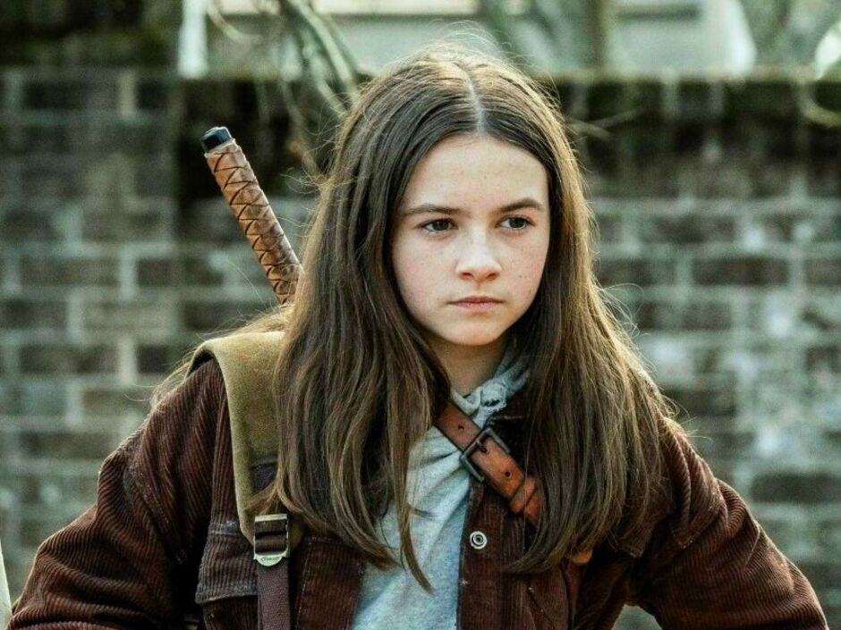
Judith Grimes est la fille de Shane et Lori. Elevé par Rck et Michonne ainsi qu'une bonne partie de leur communauté, elle grandit bien entouré et représente le symbole de l'espoir et de la survie dans un monde apocalyptique, rempli de terreurs.
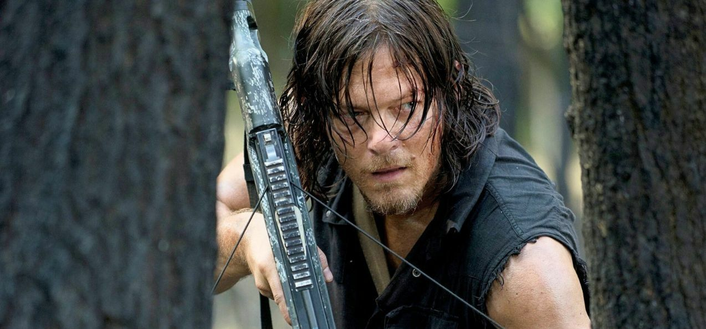
Daryl Dixon, i incarne un pisteur solitaire armé d'une arbalète. Au fur et à mesure de la série il s'impose comme le bras droit fidèle de Rick. D'abord marginal et impulsif, il révèle une grande loyauté et un profond sens du sacrifice, lorsque les siens sont en danger.
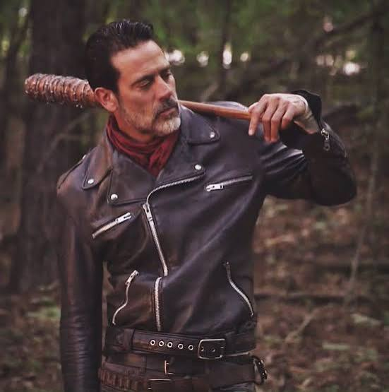
Negan Smith, il est le chef théâtral et sadique des Sauveurs, une nouvelle communauté qui apparrait au cours de la saison 6. Il est armé d'une batte de baseball entourée de fil barbelé nommée Lucille. D'abord sadique et sans limite, son developpement au cours de la série révèle d'un lourd passé.
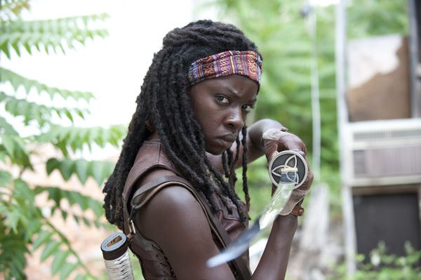
Michonne est une guerrière redoutable maniant un katana, elle rejoint le groupe après avoir survécu seule. Elle devient une stratège essentielle ainsi que la compagne de Rick et la figure maternelle de ses enfants.
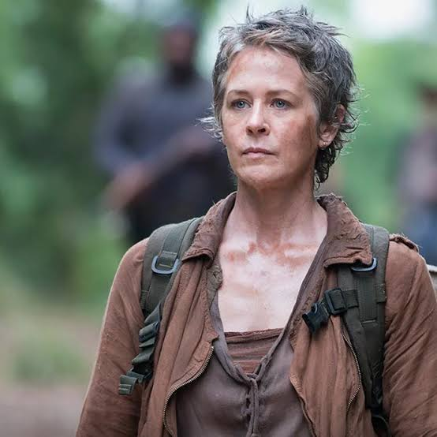
Carol Peletier, elle est une femme battue et effacée au début de l'apocalypse. Mais plus la série avance, plus elle se métamorphose en une survivante impitoyable et calculatrice. Elle n'hésite pas à prendre des décisions extrêmes dans l'ombre pour sauver sa communauté, et joue de son apparence faiblarde pour tromper ces ennemis.
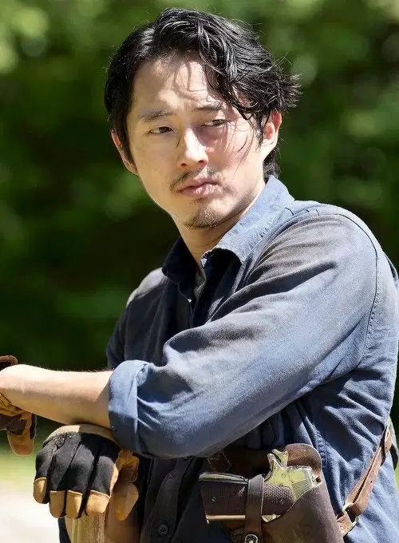
Glenn Rhee, avant l'apocalypse il était qu'un simple livreur de pizzas à Atlanta. Mais dès le premier épisode, il sauve Rick grâce à sa connaissance du quartier. Il incarne l'espoir et l'humanité du groupe et sa débrouillardise et son courage en font un éclaireur hors pair.
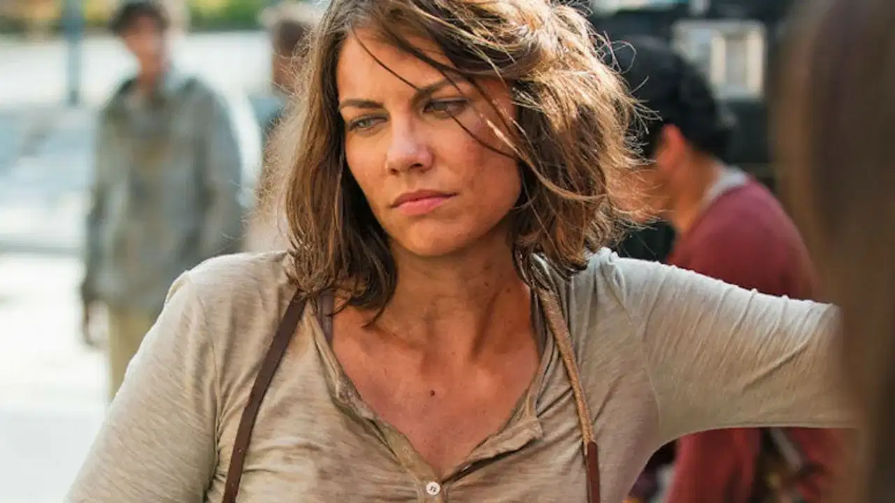
Maggie Greene (Rhee). Fille aînée du fermier Hershel, elle fait preuve d'un fort caractère et d'un grand sens des responsabilités. Elle s'affirme progressivement comme la dirigeante légitime de la Colline..
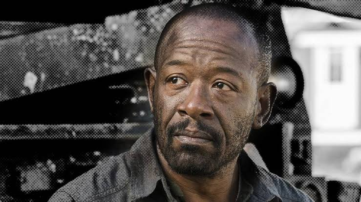
Morgan Jones, il est le premier survivant que Rick rencontre au début de la série et le premier a lui porter secour. Il alterne entre des phases de folie meurtrière et une philosophie pacifiste stricte, du aux évenemments qu'il traverse au cours de la série. Il finit par quitter le groupe principal pour rejoindre la série dérivée Fear the Walking Dead.
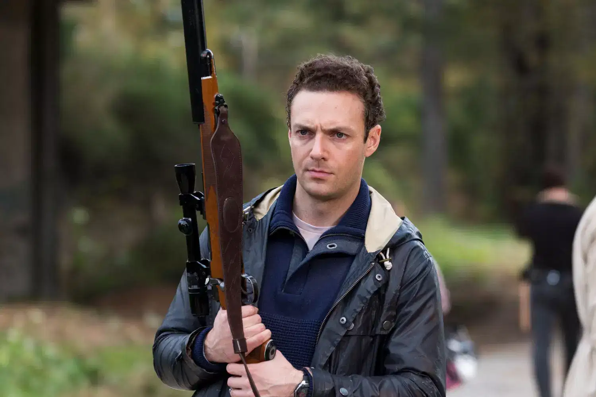
Aaron est un personnage qui jou un rôle majeur dans la vie du groupe de survivant de Rick. Introduit dans la saison 5 comme recruteur d'Alexandria. Face à l'influence de Rick il devient fort et méconnaissable, pour ensuite devenir l'un des piliers et dirigeants de la communauté jusqu'à la fin de la série.